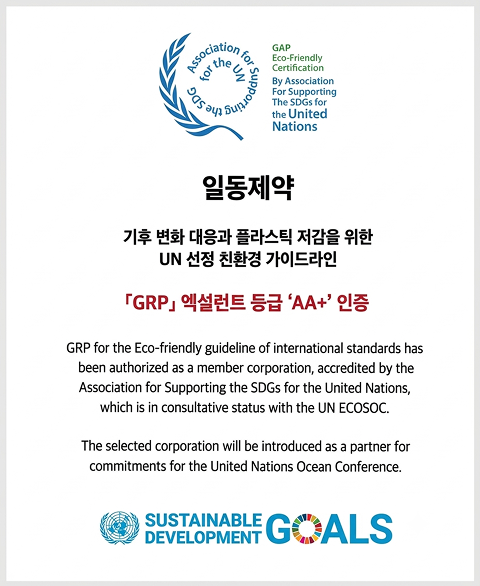
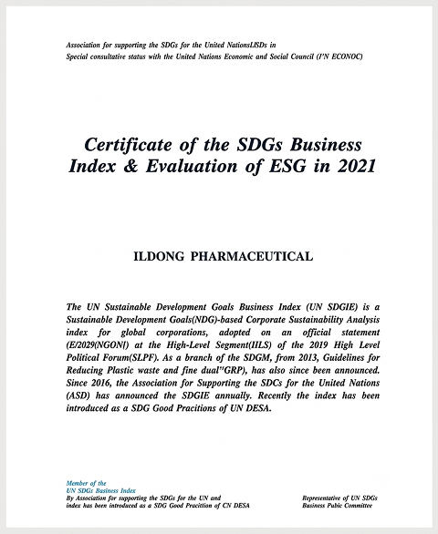
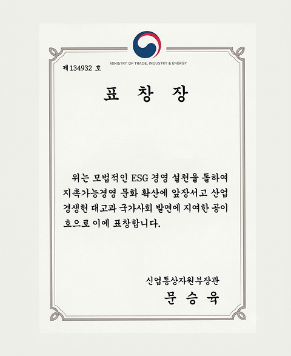

인증&수상Certifications & Awards
지역사회와 함께 쌓아온 신뢰, 지속가능한 나눔의 가치

일동제약 사회분야 산업통상자원부 장관 표창장
모범적인 지배구조 확립과 함께 보건의료 취약계층에 대한 장기적 의약품 후원, ESG 경영 문화의 제약산업계 확산에 기여한 성과를 공식 공인받았습니다. 기업시민으로서의 책무를 다하며 산업 경쟁 력을 높인 국가적 유공 기록입니다.
단순한 외형적 봉사를 넘어 제품 패키지 친환경 전환, 상생 협력 생태계 구축, 지속 가능경영 공시 투명성 등 기업의 총체적 사회적 가치가 정부 차원에서 공인된 이정

일동제약 UN SDGs 협회 3년 연속 국내 1위 선정
UN의 지속가능개발목표(SDGs)를 기반으로 한 글로벌 지속가능경영 지수에서 국내 제약·바이오 업계를 선도하는 최고 등급을 공식 획득했습니다. 전 지구적 과제에 동참하며 지속 가능한 가치 창출을 이어온 독보적인 경영 성과를 국제 사회로부터 공인받은 기록입니다.
단발성 성과에 그치지 않고 수년에 걸쳐 환경, 사회, 거버넌스 전반에서 일관된 모범을 보임으로써, 글로벌 기준에 부합하는 K-제약 산업의 지속 가능성 지표를 성공적으로 증명해 낸 상징적 이정표입니다.

유엔 SDGs 기업 이행지수 국내 3년 연속 1위
유엔 지속가능발전목표(UN SDGs) 지원 한국협회가 주관하는 글로 벌 경영 지수 평가에서 국내 제약기업을 선도하여 3년 연속 최고 영 예인 1위 그룹에 등재되었습니다. 기후변화 대응, 친환경 포장재 전환, 임직원 인권 복지에서 세계적 수준의 실행력을 증명했습니다.
본 지표는 UN 해양총회 및 고위급 정치포럼의 글로벌 실천모델로 공유되는 국제 적 공신력을 가집니다. 지속가능성 부문에서 일동의 뚝심 있는 철학을 대변합니다.